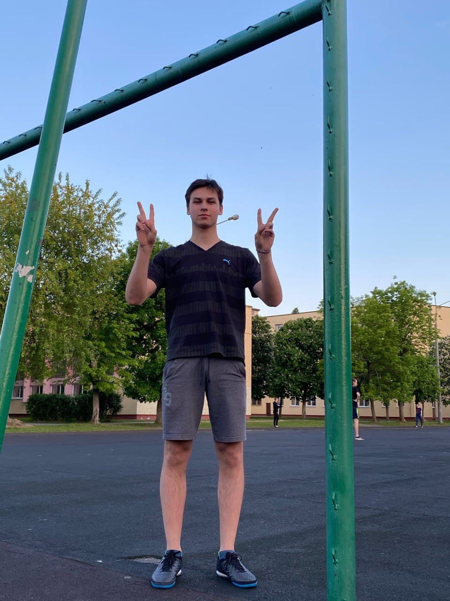

MY HOBBIES
Welcome to the world of interesting activities of Maxim Slabko!
Football
Football or soccer, which is considered to be the most popular sport in the world, is a team sport played between two teams of eleven players using a spherical ball.Foot ball The object of the game, which is played on a wide rectangular field with a goal on each end of the field, is to score by putting the ball into the adversary goal. The goal is kept by a goalkeeper who is allowed, at the exception of other players, to use his / her hands in the game. The winners are those who score the most goals. If the football (or soccer) match ends in a draw the two teams may be redirected to play extra time and / or penalty shootouts (each team taking turns to have a set number of kicks at the goal.) The way football is played now was first codified in England. Nowadays, it is governed by the FIFA, "Fédération Internationale de Football Association" (International Federation of Association Football.) The game is played now all over the world and competitions are organized nationally, continentally and internationally. The most prestigious of football competitions is the World Cup, which is held every four years.